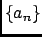

Next: VACF within the AR
Up: Auto-Regressive Analysis
Previous: Auto-Regressive Analysis
Contents
Theory and implementation
The concept of Auto-Regressive Analysis (ARA) analysis is intimitely related to the one of memory function. Memory functions have
been used for a long time in theoretical statistical physics to describe the time dependence of autocorrelation
functions. Nevertheless, the use of memory functions in the context of MD simulations has been hindered by the lack of a
suitable numerical algorithm for their calculation. Such an algorithm has been published and is now implemented in
nMOLDYN [57]. The key point is that a reliable estimates for memory functions can be obtained by assuming
an Auto-Regressive (AR) model for the underlying stochastic process and not for the memory function itself.
To compute the memory function from a discrete time serie
the latter is modelled by an
autoregressive stochastic process of order P [58,59],
Here is white noise with zero mean and amplitude
. The coeffients are fitted to the discrete time serie using Burg's algorithm [60,61],
and is given by
where  is the autocorrelation function of
is the autocorrelation function of
In all following calculations nMOLDYN works with a set of coefficients  which has been averaged over all
selected atoms and the three Cartesian coordinates.
Subsections
Next: VACF within the AR
Up: Auto-Regressive Analysis
Previous: Auto-Regressive Analysis
Contents
pellegrini eric
2009-10-06